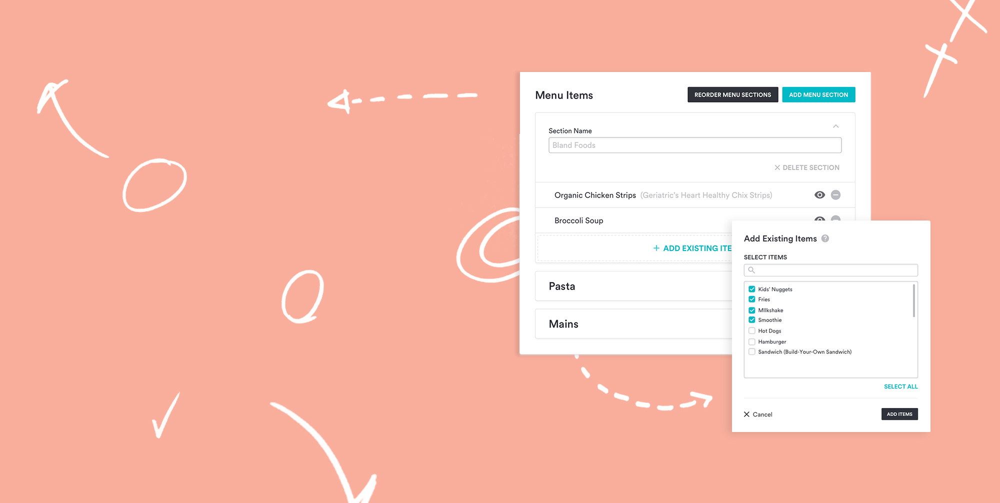
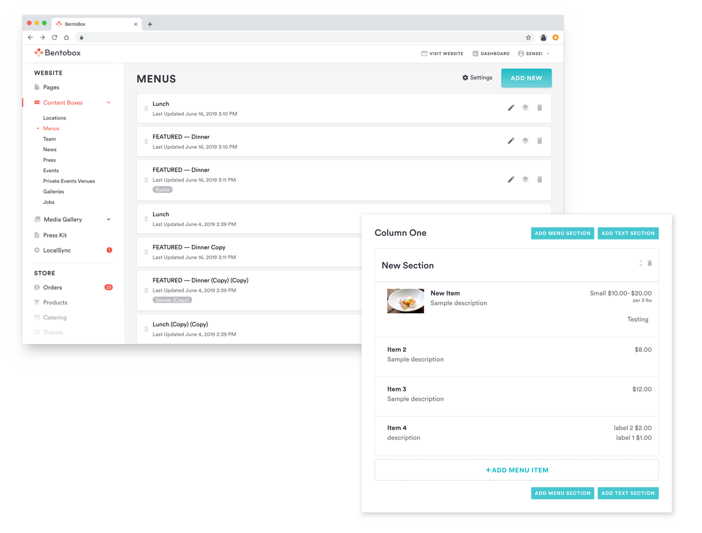
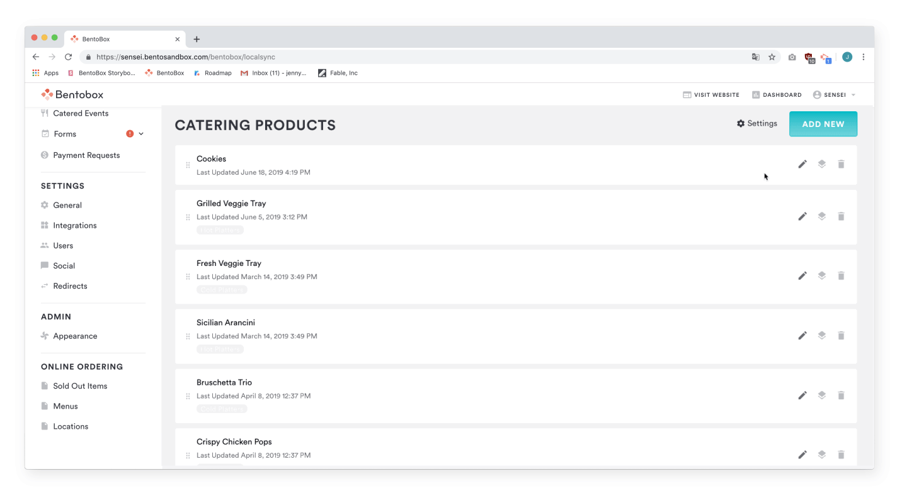
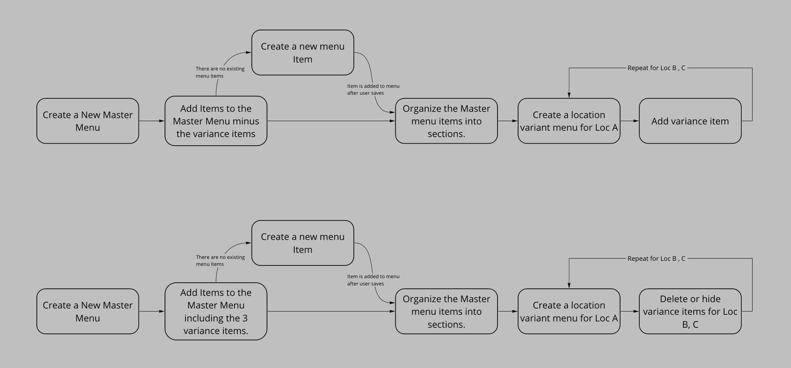
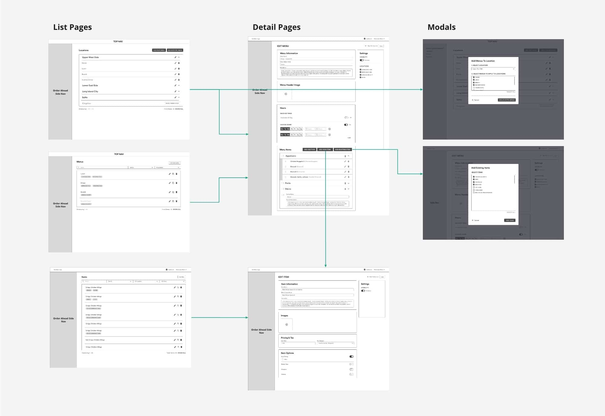
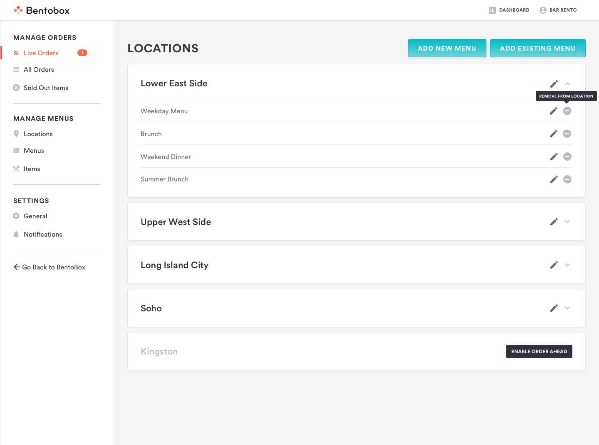
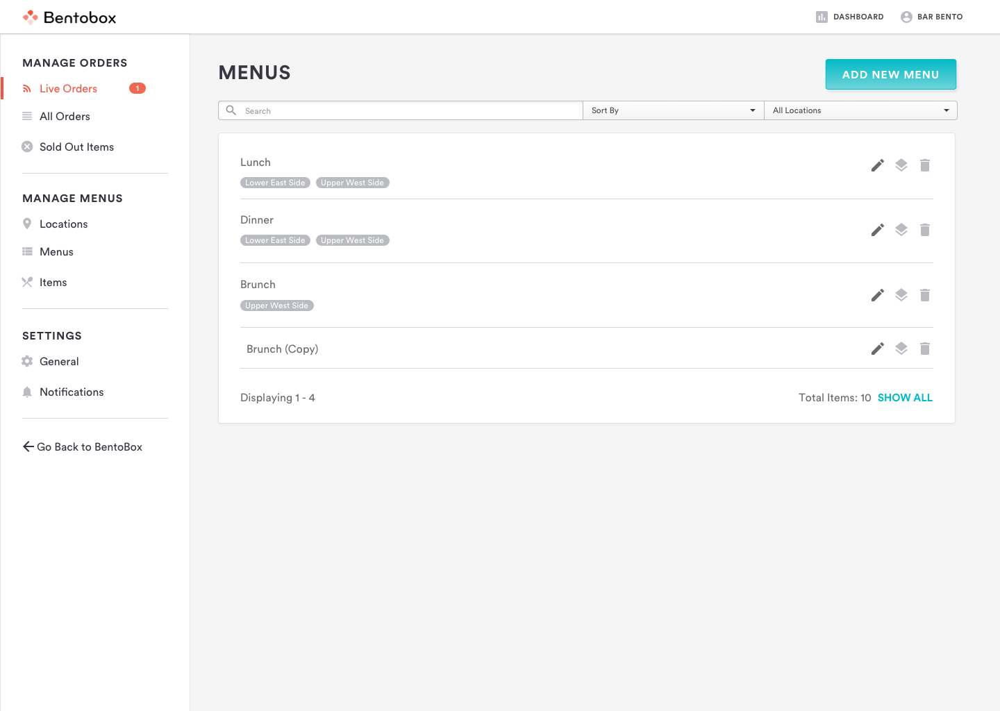
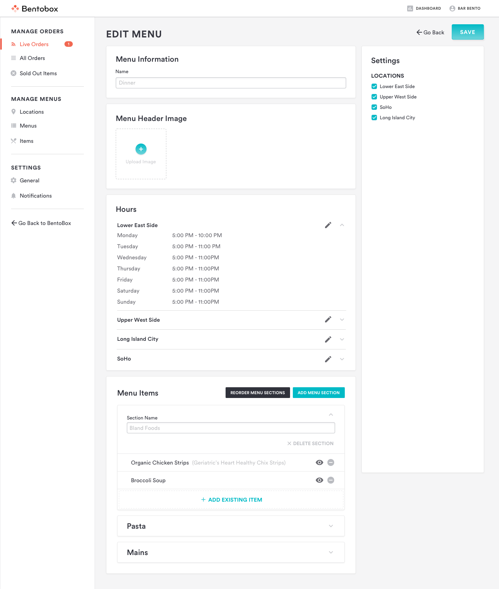
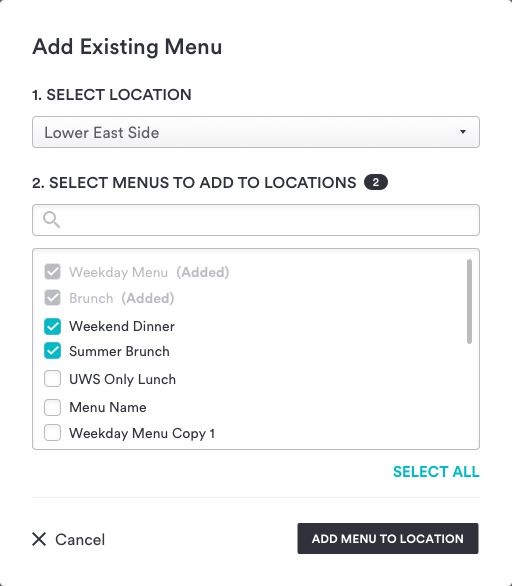

BentoBox / UX, UI, User Research
Online Ordering Menus
BentoBox needed an online-ordering feature for its restaurant CMS that could help teams quickly create and associate locations, menus, and menu items.
Design problem
Restaurants needed to manage related locations, menus, and menu items quickly while still understanding how that content would appear on their online-ordering sites.
Company goals
Hospitality was central to BentoBox: the product needed to feel tailored to restaurants while respecting the specifics of their industry and workflows.
Internal audit
An audit surfaced the trade-off between familiar nested hierarchy and flexible flat-level associations. Interviews also revealed that Customer Success teams, not only restaurant operators, were core users of the CMS.
Nesting hierarchy
In BentoBox’s Restaurant Menu Builder, items were nested under menu sections and sections under menus. This top-down association was familiar and made site output easy to visualize, but it forced people to create content in a fixed order.

Flat-level association
Other CMS products used tags to group independently created items and categories. This allowed flexible creation, but made it harder to visualize the public-facing structure.

User behaviors and competitors
Preliminary interviews with restaurants using competitors such as ChowNow, Grubhub, and Seamless showed that operators often contacted Customer Service to manage content, even when they had access to the necessary tools.
A common theme was that restaurants reached out to Customer Service to manage their content despite having access to do it themselves.
Flow explorations
The first concept used a master menu shared by default across locations, with branching for local variations. Though useful for multi-location restaurants, it was too complex for single-location businesses.

A revised flow combined hierarchy and association: items could be assigned to menus, and menus to locations, while preserving reuse across both.

Redefining the user
Recruitment uncovered that Customer Success and Onboarding Managers were often the primary CMS users. Newer team members preferred a top-down approach; more experienced members created items first, then linked them to menus and locations. Neither group immediately discovered that both workflows were possible.
Final design
The experience kept familiar menu-builder associations while encouraging an item-first workflow. This supported both newer users who built top-down and experienced teams who created items first and assigned them later.




Retrospective
The Online Ordering beta launched to qualifying customers in August 2019. The familiar pattern was received favorably, with continued measurement focused on feature usage and Customer Success requests.